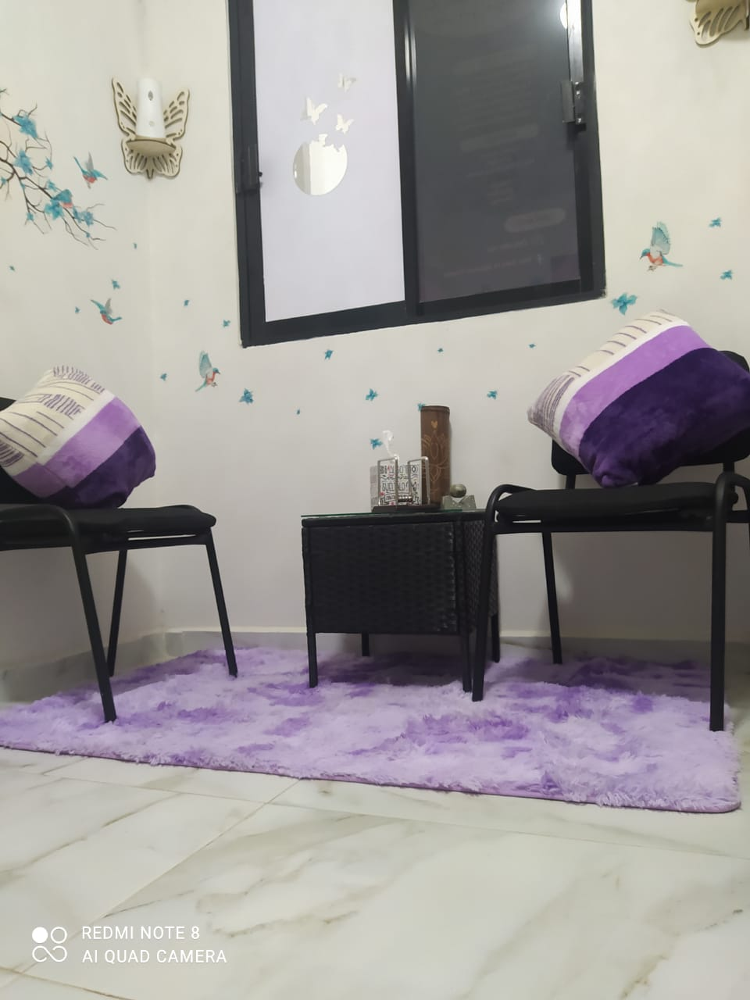
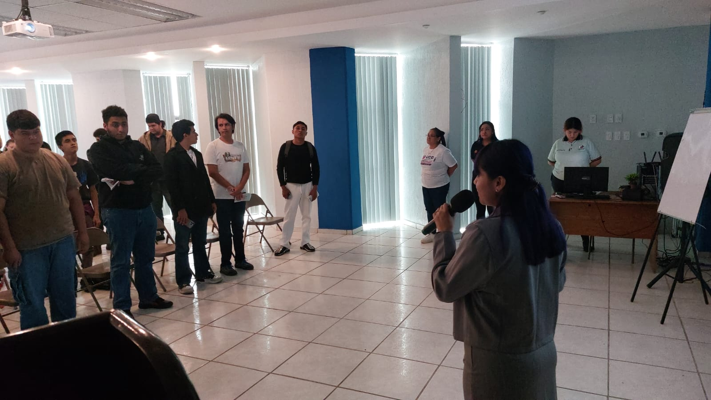
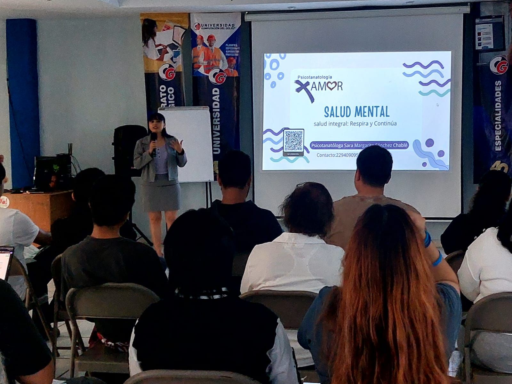

Psicotanatología
Acompañamiento emocional profesional en modalidad presencial y en línea.
"EN LA ADVERSIDAD DOS SON MEJOR QUE UNO"
Acompañamiento emocional profesional en modalidad presencial y en línea.
"EN LA ADVERSIDAD DOS SON MEJOR QUE UNO"
Profesional comprometida con el acompañamiento emocional, brindando un espacio seguro, humano y confidencial.
Ced. Lic.: 11855569
Ced. Mstría.: 15366223
Especialidad: Psicotanatología y Tanatología
Espacio para trabajar emociones y situaciones personales.
Atención en consultorio en un entorno profesional.
Sesiones virtuales con total confidencialidad.
Pequeñas reflexiones que acompañan tu proceso emocional

“Permítete sentir, sanar también es parte del camino.”
“Cada emoción tiene algo importante que enseñarnos.”

“No tienes que caminar solo en tu proceso.”

“Tu proceso es válido y merece respeto.”

“Sanar no es olvidar, es aprender a vivir en paz.”

“Las emociones también necesitan ser escuchadas.”

“Las emociones también necesitan ser escuchadas.”
Dirección:
Montesinos #1375 entre Guadalupe Victoria y Revillagigedo
Col. México C.P. 91756
Horario de atención:
Lunes a Viernes: 6:00 p.m. – 8:00 p.m.
Sábado: 3:00 p.m. – 6:00 p.m.